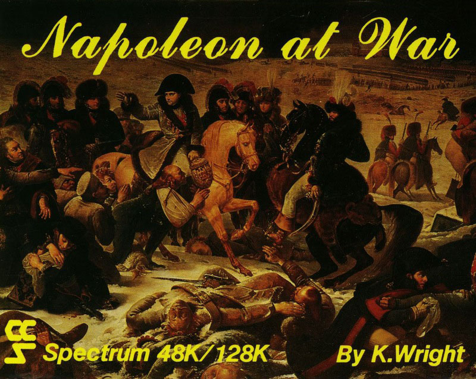
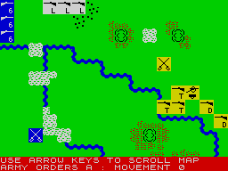

Napoleon at War


{kind=link}

| Publisher: | CCS |
| Price: | £8.95 |
| Year: | 1986 |
| Source: | CRASH, Issue 34 |

This new game from CCS, the first since Desert Rats, is written by Ken Wright, author of some of Lothlorien’s most successful titles including Waterloo and Austerlitz. Presumably, Mr Wright retained the copyright on the format of those games because this one works in exactly the same fashion. More of that later.

yellow for the Spectrum screen) lies
in wait on the right of a river. At the
top left the entry point for the reserves
is made visible — they don’t arrive till
a bit later on...
The game is a reconstruction of Napoleon’s confrontation with the Russian army under Bennigsen in a solitaire game that casts you as Napoleon. The game gives you control over five infantry corps and one cavalry corps — each with three divisions. At last, artillery is included in the scenario and it’s good to see that Mr Wright has acted on the constructive criticism from the public and given the player three units in this game.
Presentation is neat. After a passable loading screen, the player is presented with a scrolling map containing terrain symbols and unit markers which are uncluttered but obvious. Units are displayed as single character blocks annotated for unit type, Corps ID and Command ID if any. Cursor keys allow observation of the whole play area, and a menu at the base of the screen displays possible options as keypresses. The French are coloured blue, Russians are black on yellow and a single Prussian Corps (commanded by Lestocq) is displayed as black on white. You can analyse the strength and morale of your own units by asking for details when the cursor is above a unit. The marker then doubles in length to display the required information.
As in the previous games of this format, units may be ordered as an entire corps by directly ordering the lead unit of that corps, or as individual divisions — though as Mr Wright points out in the notes, such detailed command was unheard of at the time of the original conflict. If the orders you give are suspect, a corps commander may send a message to suggest an alternative course of action. Original orders will still be followed if you insist, but it’s advisable to take note of the suggestions to begin with.
The game’s three difficulty settings reflect the adaptability of the computer opponent. In a solitaire game, this has to be good. In Napoleon at War the opponent is nicknamed Charlie Oscar and the designer is evidently proud of his creation. Charlie O boasts unpredictability and sophisticated intelligence. Immediately the enemy forces start to move, hidden movement comes into play and opposing units begin to disappear from view. In fact the intelligence is a definite improvement on the earlier games and the advantages of this are manifold. If the enemy played in a similar fashion to Waterloo, my guess is that your artillery would hack most of them to pieces before they ever got close enough for melee. But it’s good to see such a quality piece of programming.
In the original battle, both Napoleon and Bennigsen were left claiming victory. One thing was obvious, the battle had gone in a way neither had anticipated or desired. The game does well in recreating this confused and unsatisfying flow, and victory conditions are correspondingly difficult for both sides to fulfil. Again, it’s good to see such demanding restrictions in a solitaire game.
The rules are straightforward and arrive on a glossy, fold out sheet. Apart from designer’s and historical notes, the game includes a couple of useful battle maps and some new features such as the reorganisation of depleted units to maintain a coherent fighting force.
Moans? Well, there are a few. Marshal Ney’s 6th Corps and Lestocq’s Prussians come into the game as reserves for both sides on Turn Four. Unfortunately, they are displayed on the map at their relevant entry points right at the start of the game. The result is a slightly annoying distraction but one that can be lived with. My copy of the game also appeared to be slightly bugged, preventing me on certain occasions from offering orders to divisional sized units. Hopefully, this was just a fault in my copy as the bug seemed intermittent and random. Finally, the game’s now obligatory double cassette housing boasts compatibility with 128K machines. Try as we might, we could only get the program to load on a 48K or 48K Plus model. There is no joystick option for control — only an aesthetic omission but it would have been nice.
Nearly a year after the appearance of Mr Wright’s first Napoleonic games, he has entered the fray once more with a host of improvements on his original system. These are not necessarily dramatic or immediately obvious but, as I keep reminding people, the best parts of a strategy game are the bits you can’t see. What choice do I have then, but to present this game with a well deserved CRASH Smash?
Presentation 90%
Beautiful cover art, clean but attractive screen and well printed, thorough rules add up to good production values
Rules 90%
Some unnecessary brevity but no awkward omissions or cryptic explanations. Rules anyone could learn easily
Playability 92%
Apart from the annoying distraction of those reserve units lurking on the map before they should be around, there’s nothing to stop you from diving in at the deep end and just playing
Graphics 89%
Perhaps these could have been livened up a little, but they work well as they stand
Authenticity 93%
The artillery has finally arrived; the hidden movement and re-organisation work well... very impressive
Opponent 93%
A game like this lives or dies by the quality of the opponent. While there will be some of you who master the game quickly, a new standard has definitely been set
Value for money 96%
A quid cheaper than offerings of a year ago, and the system has matured in the meantime
Overall 95%
Improvements were almost obligatory after such time and there are more good products now by which to compare the game. I still think it’s going to go down well